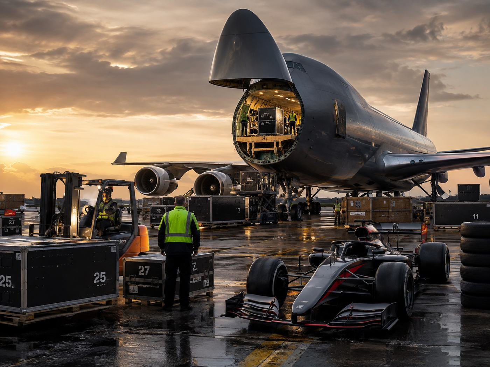

Corridas "Flyaway"
Fora da Europa — Américas, Ásia, Oriente Médio — a operação é coordenada centralmente pela F1 em parceria com a DHL, dividida pelo valor e urgência de cada item.
 IMG.02 Contêineres marítimos aguardando embarque em porto
IMG.02 Contêineres marítimos aguardando embarque em porto
Carga não crítica
Itens pesados, baratos ou duplicados — sem pressa, mas em grande volume.
O que viaja de navio
Cadeiras, mesas, equipamentos de cozinha, painéis de box e ferramentas básicas — tudo que não precisa chegar em horas.
A estratégia dos 5 kits
Para não pagar frete aéreo por toneladas de mobília, as equipes mantêm 5 kits marítimos idênticos circulando ao mesmo tempo: enquanto o Kit 1 está na Austrália, o Kit 2 já navega rumo a Miami, o Kit 3 segue para o Japão, e assim por diante.
O ano inteiro no mar
Esses contêineres praticamente não voltam à base: passam a temporada inteira navegando de porto em porto, sincronizados com o calendário.

IMG.03 Carregamento pelo nariz articulado de um 747 cargueiroCarga crítica e carros
O que precisa estar na pista em poucos dias, viaja pelo ar.
Uma frota exclusiva
A F1 freta cerca de 6 a 7 Boeing 747 ou 777 cargueiros para levar a parte crítica de todo o grid de uma só vez.
Desmontagem total
Assim que a bandeirada cai no domingo, os carros são completamente desmontados: motor, transmissão, asas dianteira e traseira e fluidos são removidos.
Paletização em "pods"
Chassi e peças vão em caixas de alumínio sob medida (pods no padrão LD3/LD11), encaixadas perfeitamente no porão do avião — maximizando espaço e travando a carga durante o voo.